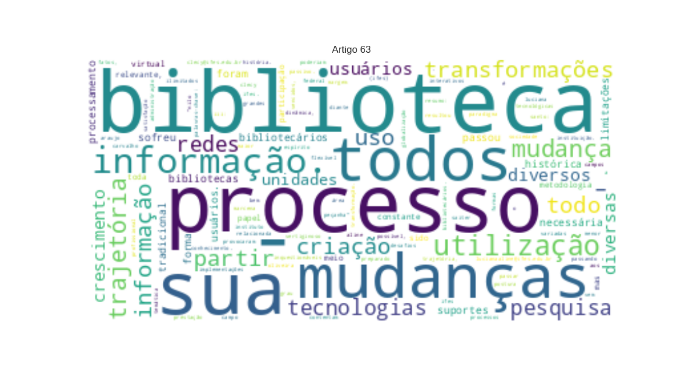

63 - OLIVEIRA, Clecy Saiter A._Biblioteca Nilo Peçanha do IFES_mudança de paradigma e desafios.txt

Biblioteca “Nilo Peçanha
LOC
” do
Instituto Federal do Espírito Santo
LOC
:
Trajetória
LOC
,
Mudança de Paradigma
PER
e
Desafios Clecy Saiter Araujo Oliveira
MISC
(
Ifes
LOC
) - clecy@ifes.edu.br
Luciana Aline Marcena Carvalho
PER
(
Ifes
LOC
) - lucianaaline@ifes.edu.br Resumo: A trajetória e evolução da biblioteca do
Ifes
LOC
. está estritamente relacionada com as mudanças ocorridas na instituição. A sociedade vem passando por um processo de globalização e implementações tecnológicas que provocaram mudanças e transformações inquestionáveis nos diversos campos do conhecimento. Diante desses fatos, o
Ifes
MISC
e sua biblioteca não poderiam passar à margem de todos esses processos de transformação. O crescimento vertiginoso no campo da informação resultou na mudança de paradigma na prestação dos serviços e demandas dos usuários das diversas unidades de informação. Aos bibliotecários são apresentados grandes desafios a serem vencidos, com a criação de bibliotecas com espaços ilimitados e usuários mais interativos que não se contentam com um atendimento passivo. É necessária ao novo profissional postura dinâmica, flexível e empreendedora bem como estar preparado para atender, das mais variadas formas em menor tempo e maior grau de satisfação possível, as demandas desses novos usuários. Palavras-chave:
Bibliotecas - História
MISC
. Bibliotecas - Administração . Bibliotecários. Área temática:
Temática III: Bibliotecas
MISC
, serviços de informação & sustentabilidade Powered by
TCPDF
MISC
(www.tcpdf.org) �
XXV
LOC
Congresso Brasileiro de Biblioteconomia,
Documentação e Ciência da Informação
MISC
–
Florianópolis
LOC
,
SC
LOC
,
Brasil
LOC
, 07 a 10 de julho de 2013 BIBLIOTECA “NILO PEÇANHA” DO
INSTITUTO FEDERAL DO ESPÍRITO SANTO
LOC
: TRAJETÓRIA,
MUDANÇA DE PARADIGMA E DESAFIOS 1
MISC
INTRODUÇÃO
ORG
Os conceitos das bibliotecas e unidades informacionais mudaram bastante a partir da segunda metade do século passado, principalmente nas duas últimas décadas, com a implantação de novos suportes da informação decorrentes da intensa utilização da informática. Assim como a
ETFES
ORG
–
Escola Técnica Federal do Espírito Santo
ORG
, hoje,
Ifes
LOC
–
Instituto Federal do Espírito Santo
LOC
, que no decorrer dos anos passou por uma série de mudanças e transformações, a sua biblioteca também sofreu um processo evolutivo. Desde a sua inauguração, em 1942, até os dias atuais, é visível o processo crescente de aperfeiçoamento a nível de atendimento. Foi registrado crescimento tanto quantitativo quanto qualitativo. Até 1962, pouco se sabe a respeito da biblioteca. A partir deste ano, começou a sistematização do seu acervo, muito embora, não contasse com pessoal qualificado para a execução do processamento técnico. Em 1981, quando foram contratadas bibliotecárias é que esse processo realmente pôde ser desencadeado de forma satisfatória. Mesmo com espaço físico inadequado, todo o acervo foi catalogado e classificado dentro dos padrões universais. A partir de 1986, com a inauguração do novo prédio da biblioteca, foi possível uma melhor distribuição e diversificação de serviços, melhorando sensivelmente o atendimento aos usuários. 2 OBJETIVOS a)
Resgatar
PER
a trajetória histórica e evolutiva da biblioteca
Nilo Peçanha do Ifes
PER
; b) Explicitar a identidade da biblioteca no seu contexto de biblioteca tradicional e biblioteca digital; �c)
Registrar
LOC
a mudança de paradigma e desafios buscando o aprimoramento do uso de tecnologias que reduzam as limitações de tempo e espaço, e aprimoram o atendimento ao usuário. 3 METODOLOGIA A metodologia foi baseada na pesquisa bibliográfica, histórica e documental. Foram utilizados : - pesquisa documentos do
Ifes
LOC
que armazenam dados institucionais desde a sua fundação como: manuais de serviços, boletins, informativos, atos, portarias e regulamentadas para a devida execução; - pesquisa de registros fotográficos para o resgate da memória, trajetória e transformações ocorridas nos diversos setores. 4
RESULTADOS FINAIS
MISC
Constatamos que o eixo condutor da criação e evolução da
Biblioteca do Nilo Peçanha
LOC
permeia e envolve todo processo evolutivo pelo qual o
Ifes
MISC
, passou durante todos esses anos, desde a sua criação em 1910 até os nossos dias. Esse processo não pode ser visto como um fato isolado, mas como parte de um todo que permite compreender e fundamentar essa evolução. No decorrer desse tempo foram registradas diversas transformações e em decorrência dessas mudanças houve necessidade de atualização constante de currículos e consequentemente a biblioteca da instituição teve que acompanhar e adaptar-se a toda essa gama de novidades. Desta forma a biblioteca sofreu intervenção em todos os seus serviços. O processamento técnico que era feito em fichas guardadas em arquivo foi substituído por um sistema (
PERGAMUM
ORG
) que engloba todos as suas operações. A circulação de materiais e referência tornaram-se mais ágeis por meio de recursos automatizados que permitem pesquisas mais avançadas, que incluem a utilização do �
Portal
LOC
de periódicos da
Capes
LOC
e participação em redes de informação. Foi necessária a instalação de um espaço para a biblioteca virtual para o acesso rápido às informações. A participação da biblioteca no auxílio do ensino à distancia têm sido relevante, devido a utilização da
EAD
MISC
e suas tecnologias na expansão da educação profissional, por permitir a formação e capacitação mais rápida tendo a biblioteca como facilitadora no uso das
TICs
ORG
com o objetivo de reduzir as limitações de tempo e espaço. Os bibliotecários para serem mais atuantes tem participado de cursos de atualização e redes de informação. 5 CONSIDERAÇÕES
FINAIS
MISC
A facilitação do uso de tecnologias, seus produtos e serviços fornecerão os suportes digitais necessários para o acesso à informação, afinal, com a mudança de paradigma, a biblioteca tradicional de papel vai cedendo lugar à biblioteca virtual , não sendo mais considerada como um local de estudo, mas sim uma prestadora de serviços em toda sua amplitude. Nesse aspecto, o papel do bibliotecário tem sido relevante, na busca constante da informação. A atuação de seus profissionais por meio de participações em eventos da categoria, estabelecendo redes e sistemas de cooperação, se ampliaram com a utilização das tecnologias de informação e da comunicação, favorecendo ainda mais esse processo evolutivo. �